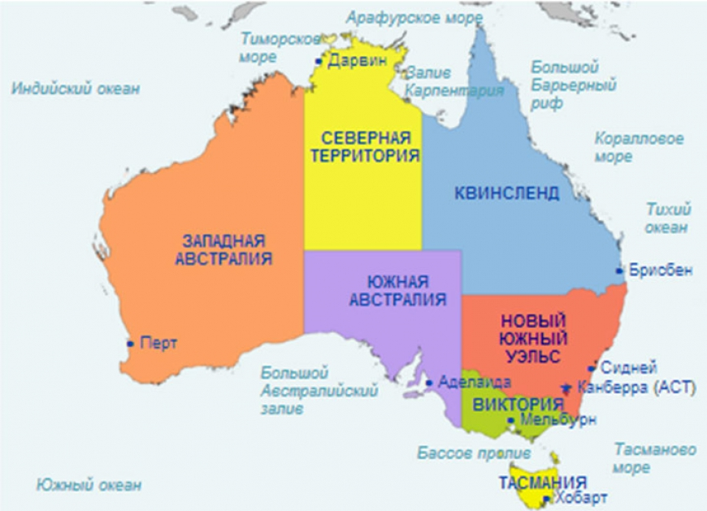

Народности
Население Австралии по переписи 2011 года составляло 21 507 719 человек.По оценке на конец 2018 года — 25 180 200 человек.Большинство населения Австралии — потомки иммигрантов XIX и XX веков, при этом большинство этих иммигрантов прибыли из Великобритании и Ирландии.Самый крупный город Австралии — Сидней, столица самого населённого штата Новый Южный Уэльс.
Австралийская столичная территория является самым густонаселённым субъектом в составе Австралийского Союза — плотность населения составляет 151,49 чел./км².
Если покинуть побережье и проследовать вглубь материка около 200 километров, начнутся малонаселённые районы континента. Буйные влажные леса и богатые сельскохозяйственные угодья сменяются жаркой, сухой, открытой местностью, где можно встретить только кустарниковые заросли и злаки. Однако в этих местностях тоже есть жизнь. Там проживает множество аборигенов.На сотни километров простираются обширные овечьи и коровьи пастбища, известные как станции. Дальше, в глубине материка, начинаются палящие зноем пустыни.
Официальный язык — английский (диалект, известный как австралийский английский). За период после Второй мировой войны население Австралии увеличилось более чем в 2 раза (после Первой мировой войны — в 4 раза) благодаря осуществлению амбициозной программы стимулирования иммиграции. В 2001 27,4 % населения Австралии составляли люди, родившиеся за рубежом. Крупнейшими группами среди них являлись британцы и ирландцы, новозеландцы, итальянцы, греки, нидерландцы, немцы, югославы, вьетнамцы и китайцы.

Интересные факты
1)Европейцы открыли континент, позже названный Австралией, в середине XVII века. Первоначально эта земля была названа Новой Голландией, хотя голландцы так и не взялись за освоение новой территории.
2)Формально верховным правителем Австралии является британская королева Елизавета II.
3)Австралия – единственный материк на Земле, где нет ни одного вулкана или современного оледенения.
4)Австралия является мировым лидером по запасам урана.
5)Животный и растительный мир Австралии насчитывает около 12 000 видов, причем 9 000 из них не встречаются больше нигде на планете.
Климатические зоны
В Австралии встречается 4 природные зоны, а также есть слабовыраженные области высотной поясности. Зоны расположены по широтам и зависят от низменного рельефа материка, лишь на востоке встречаются горные склоны. Наибольшую часть Австралии занимают пустыни и полупустыне, расположенные в тропическом поясе.